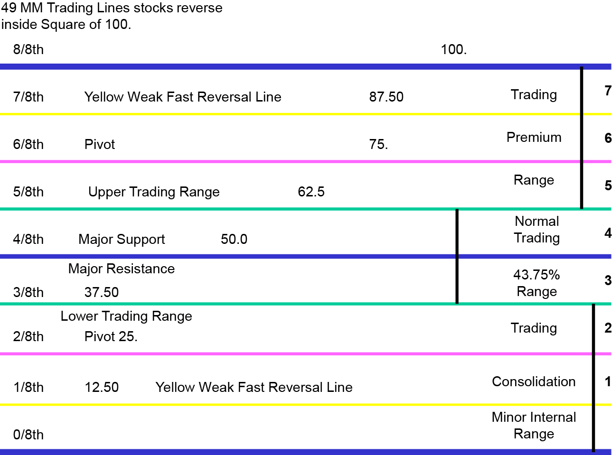

Tutorial
Murrey
maths level calculation for forex trading.
Murrey
maths levels are a part of murrey maths trading system. It gives
various trading levels for stocks and indices similar to
Fibonacci retracements. These levels consist of 9 equidistant lines
which are parallel to each another. Murrey Math Levels from the
bottom are at the levels 0/8, 1/8, 2/8, 3/8, 4/8, 5/8, 6/8, 7/8 and
8/8.
Murrey Math trading range
Every
Trading Octave 8/8 presents 5 different trading strategies:
1a) Normal Trading Range
1b) Consolidation Trading Range
1c) Premium Trading Range
1d) Over Bought Trading Range
1e) Over Sold Trading Range



Murrey Math mt4 Indicator stepup
Download link for MT4 ndicator
https://drive.google.com/open?id=1Ojr3NbuiPpbFXYTPcOi_vo8Uz1hrr2C6
Short
tutorial uses Murrey Math:
Setting
Period:
- To scalping (TF 5m/1m): 32
- To Intraday / Swing
(15m TF-daily): 64 (default)
For longterm (TF-yearly weekly):
128
2
MM strategy in general:
a.
Buy on line 1/8-TP in 4 / 8 or Buy at 0 / 8 â € "TP in 2 /
8
b. Sell 7/8-TP line in 4 / 8 or Sell on 8 / 8 â € "TP
in 6 / 8
A.
Main approaches:
1.
Sell in 7 / 8, TP in 4 / 8
2. Buy at 1 / 8, TP in 4 / 8
The
main approach in the majority of these are common.
Factors
that increase the success rate above the main approaches:
1.
Previous movements to move from 5 / 8 or more
2. Double
Pattern / Tripple bottom in 1 / 8 or double top / triple top in 7 /
8
3. Form a higher low prices on 1 / 8 or lower high in 7 /
8
Notes:
If you do this alone .. you is enough
to make money.
B.
Secondary approach (works well not only how much profit)
1.
Buy at 0 / 8, TP in 2 / 8
2. Sell at 8 / 8, TP at 6 / 8
Next
you'll learn over time using this MM. (This applies in all areas
where the results obtained according to the proportion in which you
take the time to learn)
Definition
of levels in the Murrey Math levels
1.
Line 8 / 8&0 / 8 (Ultimate Ultimate Support and
Resistance).
This line can be considered as Support /
Resistance strongest.
2. Line 7 / 8 (Weak, Place to Stop
and Reverse).
Weak
lines. If a sudden price moves too fast and too far and then stop in
at around this line, it means prices will soon turn around. If prices
do not stop near this line, then the price will continue moving to
the line 8 / 8.
3. Line 1 / 8 (Weak, Place, to the Stop and
Reverse).
Weak lines. If a sudden price moves too fast and too
far and then stop in at around this line, it means prices will soon
turn around. If prices do not stop near this line, then the price
will continue moving to the line 0 / 8
4. Line 2 / 8 and 6 / 8
(Pivot, Reverse)
2 this line to swing a trade with the line 4
/ 8 if the price moves between 2/8-4/8 or 6/8-4/8 line.
5.
Line 5 / 8 (Top
of Trading Range)
Price
spent 40% of all movements in between the lines 5 / 8 and 3 / 8. If
prices move or stop at about the line 5 / 8 for 10-12 days, can be
interpreted as a zone to try to take positions Sell (there are some
people who do this). But if the price is above the tendency of 5 / 8,
it means that prices will continue to the next resistance level.
6.
Line 3 / 8 (Bottom
of Trading Range).
If
the price is below this line and in the condition of the uptrend, it
means the price will be very difficult to penetrate to this level. If
the price of penetrating to this level in the uptrend and settled
conditions above that level for 10-12 days, it means prices will move
between 3 / 8 5 / 8 over 40% of the time movement.
7. Line
4 / 8 (Major
Support / Resistance Line).
Is
a major
line of support / resistance.
It's good for entry-level sell or buy. Akanlah be a strong support
when the price is above the 4 / 8 and will be strong resistance if
the price is below 4 / 8.
C.
How To Use Murrey Math?
When
I first use Murrey Math, I treated the same as a simple pivot
garis2-Resistance-Support of other areas which could be used to
signal buy / sell. I am aware there are several levels of
oft-repeated in several time frames, which I think is a pivot or S /
R forte. The longer the more I understand MM sedikit2 work and there
are a few tips on who I could learn so far. Garis2 Pertama2 little
about itself:
First, who very clearly is that when
over-extended market to overshoot or extreme overshoot line, then
there is most likely price will bounce back, let alone supported by
confirmation from other indicator2.
Then there are again,
2 MM strategy in general:
2. Buy on line 1/8-TP in 4 / 8 or
Buy at 0 / 8 TP in 2 / 8
3. Sell 7/8-TP line in 4 / 8 or Sell
on 8 / 8 TP in 6 / 8
Note: Murrey Math is not a purely
mechanical system. Readings candlestick pattern, chart pattern, the
other pivot and confirmation from other indicators can be a jim-dandy
filters consideration OP.
Trading
Range line (5
/ 8 and 3 / 8) may pertama2 bit confusing. Where is the market most
of it outside garis2 it. But the truth is very important garis2 to
determine market sentiment. Basically, when the market was in between
these lines mean more market sentiment flat or sideway. If the line
is above the 5 / 8, expected bullish market can, in turn under 3 / 8,
the market is bearish. Other lines 5 / 8 is a strong support when we
are going in when the market entry bullish, and vice versa 3 / 8 is a
strong resistance if we want an entry in the market who are
bearish.
Break from garis2 this could be very important. For
example, if the market is above 5 / 8 for some time and then break
down the TSB, then starting out a bullish sign of strength. Usually
always be followed to the level 4 / 8, and if it happens then 5 / 8
who are resistant significant. If darisitu then break again to level
the price of 5 / 8, it means the price of trying to re-test into a
bullish mode again where previously failed bullish.
If
indeed the market re-test 5 / 8 and then fail, can be interpreted to
confirm that bullish sentiment has been exhausted and the market will
try to move to 3 / 8. And if the market breaks down 3 / 8, you can
bet the market turned bearish and level 3 / 8 to be strong
resistance which
if prices break back into the top 3 / 8 can be considered a change of
market sentiment again.
Note: kadang2 re-test did not happen
and the market will break directly from one level to the other
level2.
Orang2 often ask, what time frame is used? I answered
almost all of them (1m/5m/30m/1h/4h chart), I use MM. If you
understand, MM can explain the context of the market more clearly.
Akanlah useful when used to all TFs, which may provide clues to which
direction of movement of a market.
For instance, when Cable's
strong rebound from lvl 0 / 8 on 4H TF. The movement targeted to lvl
2 / 8 (referring to the strategy described above) at 1.8250
(examples). When the price would go to that level, I look to the TF
H1, which had broken through the line 3 / 8, the possibility of
further movement into 4 / 8 which is also in the price of
1.8250.
When prices have reached to it, I jump into the TF 5 M
for a clearer price action. And I saw that the cable had broken
through to the top of the 3 / 8, re-test and bounce back, looking for
levels 5 / 8, where also the price of 1.8250. If this level is
translucent, then the next target of 6 / 8 at 1.8265.
Furthermore
Trending up seemed to have run out of gas. Target in 4H and 1H have
been hit, and has translucent 5M signifika and exceeding the target
of this level diperkirakan.Hal who will stop and allow prices retrace
a bit.
When prices hit the 6 / 8 (1.8265), I headed to the TF
1M to seek reversal of precision entry and I saw that on 7 / 8 (stall
and reserve) at 1.8272. In the context of seeing all the time frames,
it translates that keungkinan greatest when the price touched this
level, it will immediately bounce.
Apparently the price
towards 1.8272 and bounced straight, TP 50pips!
That examples
using MM who I know, to give the context of how the market moves and
to where. I think it is important to look at all the first time
frame. If you have been accustomed to, then it can provide info who
steadily, and sometimes when they show the same conditions, then you
already do not need another analysis!
Other
examples:
Trade
short cable (1.7792 7GMT 09:45 hrs, close at 09:57 hours 7GMT
1.7777), where there is a divergence signal from the elbow, price
channels, Moving Averages, etc.
But the main confirmation when
I signed in, in the TF 5 M, the price increase test tries to level 3
/ 8 at 1.7792. As I say first, if the market is under this level, it
shows strong resistance which means that changes in market sentiment.
Furthermore, in TF 1 F, the price is 1 / 8 (extreme overshoot), which
means that it is not enough space to move prices upward and likely
will bounce down
To exit, supported also by the
signal of
the divergence / Bollinger /
price channel / pivot and confirmation for me is the price chart 1 M
was in the top-level 5 / 8 at 1.7769. The meaning is strong support
which represents a change from bullish sentiment toward certain price
is unclear. I took exit there because in my view, the market was
bullish short term because prices have gone up 80 pips in an hour, so
it seemed the level of support.